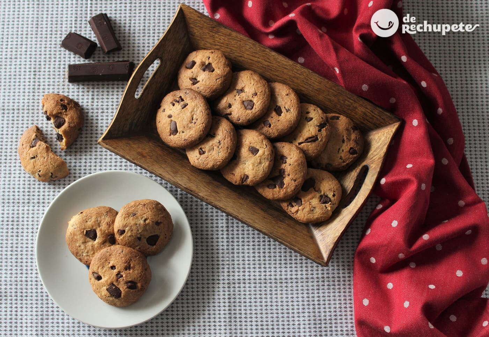
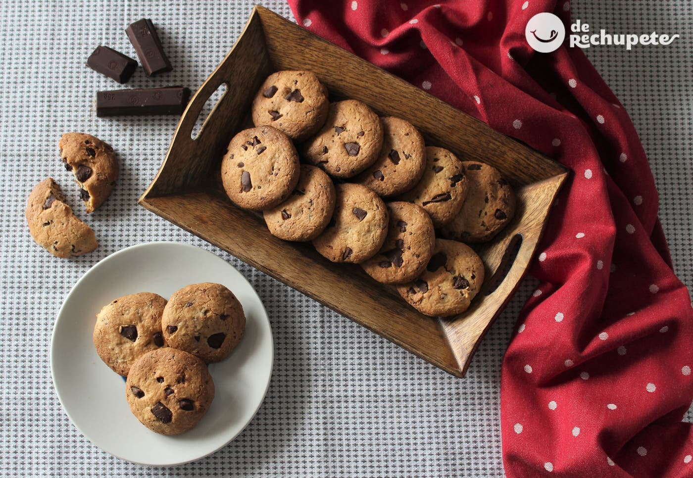

Cakes
Subtitle
A cake is a sweet food made by baking a mixture of flour, eggs, sugar, and fat in an oven. Cakes may be large and cut into slices or small and intended for one person only.
A cake is a sweet food made by baking a mixture of flour, eggs, sugar, and fat in an oven. Cakes may be large and cut into slices or small and intended for one person only.
A cake is a sweet food made by baking a mixture of flour, eggs, sugar, and fat in an oven. Cakes may be large and cut into slices or small and intended for one person only.